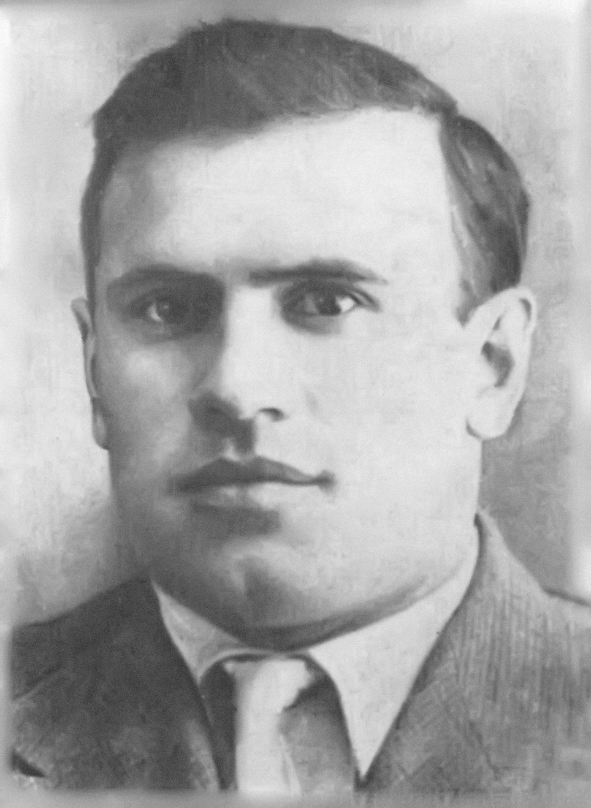

Творческий путь
- 1927 г. поступил в Казанский землеустроительный техникум. Работал мелиоратором и строителем.
- В 1933 г. перешёл на журналистскую работу, ответственный секретарь журнала «Пионер каляме» (Перо пионера). В 1938—1941 гг. учёба в Казанском педагогическом институте.
- С 1939 г. — член Союза писателей СССР.
- В 1940 году выходит его книга «Мамины сказки», которые вошли в золотой фонд татарской литературы. В 1941 году была издана пьеса «Маленький узник», в которой Алиш показывает звериное лицо фашизма. Сила воздействия его произведений очень велика. Они помогают воспитывать в детях чувство трудолюбия и товарищества, учат их любить Родину, быть мужественными и смелыми, правдивыми и справедливыми, верности данному слову, уважению к старшим.
- «Произведения писателя А. Алиша отличаются легкостью языка, занимательностью и всегда содержательны. Он заслуженно пользуется авторитетом среди татарских советских школьников»-Говорил Муса Джалиль
- В 1941 году, перед самой войной, был редактором татарского радиокомитета.
- С начала войны Абдулла Алиш — на фронте. В октябре 1941 под Брянском был взят в плен и брошен в концлагерь, где встретился с Мусой Джалилем